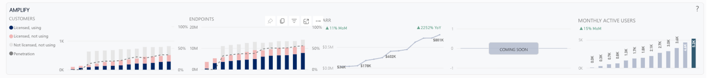

IT Support · Browser Extension
Nexthink
Nexthink
Amplify
A Chrome extension giving L1 support agents real-time device diagnostics — without leaving the helpdesk ticket.
A Chrome extension giving L1 support agents real-time device diagnostics — without leaving the helpdesk ticket.


